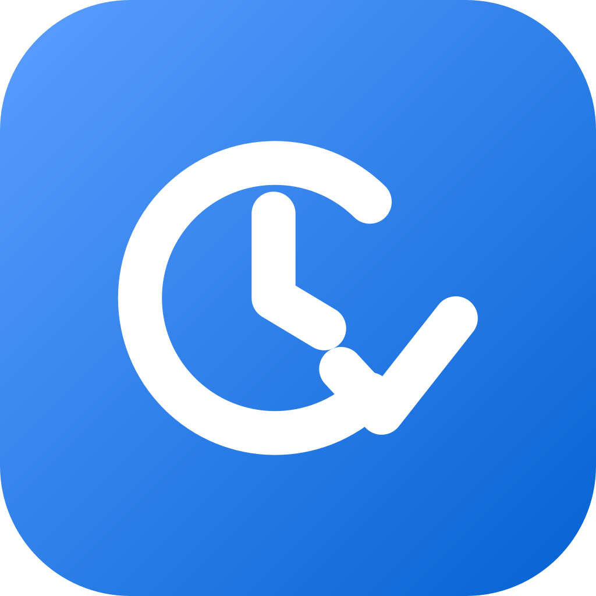

Track without friction
Start, pause, resume, stop, or switch timers as your work changes.

WorkTimeTrackerA desktop app for keeping projects, working time, and balances in one focused place—on your own terms.
Track time as you work. Keep every project in view.
Built for the working day
Start, pause, resume, stop, or switch timers as your work changes.
Your native app data is stored in a Postgres database you control.
See time distribution, budgets, consumption, and forecasts in one place.
A Tauri desktop app for Windows, macOS, and Linux.
UTC-canonical timestamps derive local days and durations correctly, including daylight saving time.
WorkTimeTracker is MIT licensed—inspect, adapt, and contribute on GitHub.
A simple rhythm
Choose your working days and weekly target.
Run a timer or add time afterwards when it suits you.
Review projects, balances, reports, breaks, and absences.
Get WorkTimeTracker
New releases appear here automatically after they are published.
Obtain, feedback, contribute
How to obtain WorkTimeTracker, how to provide feedback, and how to contribute to it.
Every release ships installers for Windows and macOS and portable archives. Take them from the Downloads section above or from the GitHub Releases page. The installation guide describes the download, the required database settings, and what to do when a start fails. To build from source instead, follow the development guide.
Bug reports and enhancement requests belong in the issue tracker: open a new issue after you have searched the existing issues, so duplicates stay rare. A useful report names the application version, the operating system, the steps to reproduce, and the expected and the actual result. Report a security vulnerability privately as described in SECURITY.md instead of opening a public issue.
Fork the repository, create a branch, add tests for your change, run lint, typecheck, and the test suites, then open a pull request whose commit messages and title follow the Conventional Commits format. The workflow, the commit convention, and the pull request checklist are in CONTRIBUTING.md, the local setup and the checks in the development guide, and the rules for coding agents in AGENTS.md.